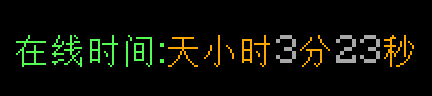

效果

实现方式
首先要实现在线时间统计，需要先定义时间。
所以在这里 需要先创建几个稍后要用到的计分板：
/scoreboard objectives add timetick dummy
/scoreboard objectives add times dummy
/scoreboard objectives add timem dummy
/scoreboard objectives add timeh dummy
/scoreboard objectives add timed dummy
顺次显示的是 秒-分-时-天。
计时器的思路是这样的：
使用循环命令方块为timetick加分，则每秒可以增加20（每秒命令方块运行20次）
当timetick为20时，为times加1并设置timetick为0。
当times为60时，为timem加1并设置times为0。
当timem为60时，为timeh加1并设置timem为0。
...以此类推。
所以在这里 需要使用命令方块组+目标选择器进行运算:
循环: scoreboard players add @a timetick 1
连锁: scoreboard players add @a[scores={timetick=20..}] times 1
连锁: scoreboard players set @a[scores={timetick=20..}] timetick 0
连锁: scoreboard players add @a[scores={times=60..}] timem 1
连锁: scoreboard players set @a[scores={times=60..}] times 0
连锁: scoreboard players add @a[scores={timem=60..}] timeh 1
连锁: scoreboard players set @a[scores={timem=60..}] timem 0
连锁: scoreboard players add @a[scores={timeh=24..}] timed 1
连锁: scoreboard players set @a[scores={timeh=24..}] timeh 0
最后 再加一个title用于显示即可
循环： execute as @a at @s run title @p actionbar
[{"text":"在线时间:","color":"green","bold":false,"italic":false,"underlined":false,"strikethrough":false,"obfuscated":false},{"score":{"objective":"timed","name":"@p"},"color":"gray","bold":false,"italic":false,"underlined":false,"strikethrough":false,"obfuscated":false},{"text":"天","color":"gold","bold":false,"italic":false,"underlined":false,"strikethrough":false,"obfuscated":false},{"score":{"objective":"timeh","name":"@p"},"color":"gray","bold":false,"italic":false,"underlined":false,"strikethrough":false,"obfuscated":false},{"text":"小时","color":"gold","bold":false,"italic":false,"underlined":false,"strikethrough":false,"obfuscated":false},{"score":{"objective":"timem","name":"@p"},"color":"gray","bold":false,"italic":false,"underlined":false,"strikethrough":false,"obfuscated":false},{"text":"分","color":"gold","bold":false,"italic":false,"underlined":false,"strikethrough":false,"obfuscated":false},{"score":{"objective":"times","name":"@p"},"color":"gray","bold":false,"italic":false,"underlined":false,"strikethrough":false,"obfuscated":false},{"text":"秒","color":"gold","bold":false,"italic":false,"underlined":false,"strikethrough":false,"obfuscated":false}]
（考虑到多人游戏的情况 这里添加了一个execute用于保证显示正确的对象）
当我们搭建好全部命令方块并运行后，不难发现虽然计时器正常，但却没有显示值为0的项目:

这是因为未被赋值的计分板项目默认不显示，需要手动设置为0：
/scoreboard players set @p times 0
/scoreboard players set @p timem 0
/scoreboard players set @p timeh 0
/scoreboard players set @p timed 0
之后即可正常使用。
命令
/scoreboard objectives add timetick dummy
/scoreboard objectives add times dummy
/scoreboard objectives add timem dummy
/scoreboard objectives add timeh dummy
/scoreboard objectives add timed dummy
/scoreboard players set @p times 0
/scoreboard players set @p timem 0
/scoreboard players set @p timeh 0
/scoreboard players set @p timed 0
循环: scoreboard players add @a timetick 1
连锁: scoreboard players add @a[scores={timetick=20..}] times 1
连锁: scoreboard players set @a[scores={timetick=20..}] timetick 0
连锁: scoreboard players add @a[scores={times=60..}] timem 1
连锁: scoreboard players add @a[scores={timem=60..}] timeh 1
连锁: scoreboard players set @a[scores={timem=60..}] timem 0
连锁: scoreboard players add @a[scores={timeh=24..}] timed 1
连锁: scoreboard players set @a[scores={timeh=24..}] timeh 0
循环: execute as @a at @s run title @p actionbar [{"text":"在线时间:","color":"green","bold":false,"italic":false,"underlined":false,"strikethrough":false,"obfuscated":false},{"score":{"objective":"timed","name":"@p"},"color":"gray","bold":false,"italic":false,"underlined":false,"strikethrough":false,"obfuscated":false},{"text":"天","color":"gold","bold":false,"italic":false,"underlined":false,"strikethrough":false,"obfuscated":false},{"score":{"objective":"timeh","name":"@p"},"color":"gray","bold":false,"italic":false,"underlined":false,"strikethrough":false,"obfuscated":false},{"text":"小时","color":"gold","bold":false,"italic":false,"underlined":false,"strikethrough":false,"obfuscated":false},{"score":{"objective":"timem","name":"@p"},"color":"gray","bold":false,"italic":false,"underlined":false,"strikethrough":false,"obfuscated":false},{"text":"分","color":"gold","bold":false,"italic":false,"underlined":false,"strikethrough":false,"obfuscated":false},{"score":{"objective":"times","name":"@p"},"color":"gray","bold":false,"italic":false,"underlined":false,"strikethrough":false,"obfuscated":false},{"text":"秒","color":"gold","bold":false,"italic":false,"underlined":false,"strikethrough":false,"obfuscated":false}]
OOC
/summon falling_block ~ ~1.5 ~ {Time:1,BlockState:{Name:"minecraft:redstone_block"},Motion:[0d,-1d,0d],Passengers:[{id:falling_block,Time:1,BlockState:{Name:"minecraft:activator_rail"},Passengers:[{id:command_block_minecart,Command:"/data merge block ~ ~-2 ~ {auto:0b,Command:\"\"}"},{id:command_block_minecart,Command:"/scoreboard objectives add timetick dummy\n/scoreboard objectives add times dummy\n/scoreboard objectives add timem dummy\n/scoreboard objectives add timeh dummy\n/scoreboard objectives add timed dummy\n/scoreboard players set @p times 0 \n/scoreboard players set @p timem 0 \n/scoreboard players set @p timeh 0 \n/scoreboard players set @p timed 0 \nscoreboard players add @a timetick 1\nscoreboard players add @a[scores={timetick=20..}] times 1 \nscoreboard players set @a[scores={timetick=20..}] timetick 0 \nscoreboard players add @a[scores={times=60..}] timem 1\nscoreboard players add @a[scores={timem=60..}] timeh 1 \nscoreboard players set @a[scores={timem=60..}] timem 0 \nscoreboard players add @a[scores={timeh=24..}] timed 1 \nscoreboard players set @a[scores={timeh=24..}] timeh 0 \nexecute as @a at @s run title @p actionbar [{\"text\":\"在线时间:\",\"color\":\"green\",\"bold\":false,\"italic\":false,\"underlined\":false,\"strikethrough\":false,\"obfuscated\":false},{\"score\":{\"objective\":\"timed\",\"name\":\"@p\"},\"color\":\"gray\",\"bold\":false,\"italic\":false,\"underlined\":false,\"strikethrough\":false,\"obfuscated\":false},{\"text\":\"天\",\"color\":\"gold\",\"bold\":false,\"italic\":false,\"underlined\":false,\"strikethrough\":false,\"obfuscated\":false},{\"score\":{\"objective\":\"timeh\",\"name\":\"@p\"},\"color\":\"gray\",\"bold\":false,\"italic\":false,\"underlined\":false,\"strikethrough\":false,\"obfuscated\":false},{\"text\":\"小时\",\"color\":\"gold\",\"bold\":false,\"italic\":false,\"underlined\":false,\"strikethrough\":false,\"obfuscated\":false},{\"score\":{\"objective\":\"timem\",\"name\":\"@p\"},\"color\":\"gray\",\"bold\":false,\"italic\":false,\"underlined\":false,\"strikethrough\":false,\"obfuscated\":false},{\"text\":\"分\",\"color\":\"gold\",\"bold\":false,\"italic\":false,\"underlined\":false,\"strikethrough\":false,\"obfuscated\":false},{\"score\":{\"objective\":\"times\",\"name\":\"@p\"},\"color\":\"gray\",\"bold\":false,\"italic\":false,\"underlined\":false,\"strikethrough\":false,\"obfuscated\":false},{\"text\":\"秒\",\"color\":\"gold\",\"bold\":false,\"italic\":false,\"underlined\":false,\"strikethrough\":false,\"obfuscated\":false}]"},{id:command_block_minecart,Command:"setblock ~ ~1 ~ command_block{auto:1b,Command:\"fill ~ ~ ~ ~ ~-2 ~ air\"} replace"},{id:command_block_minecart,Command:"kill @e[type=command_block_minecart,distance=..1]"}]}]}